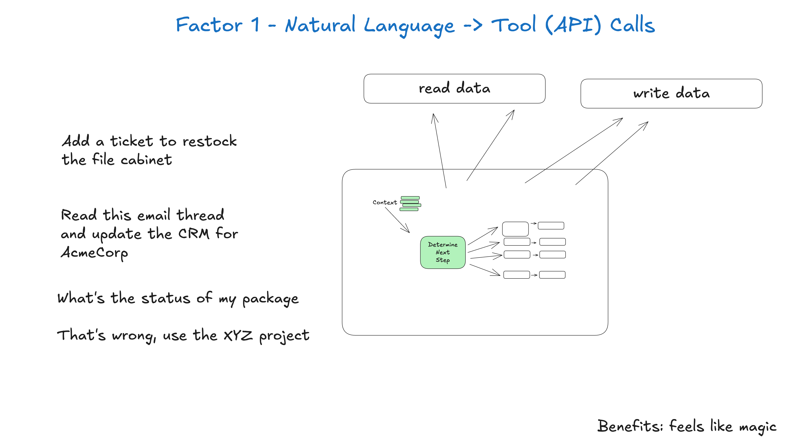

1. 從自然語言到工具呼叫（Natural Language to Tool Calls）
代理開發最常見的模式之一，是把自然語言轉成結構化的工具呼叫。這個模式很強大，讓你能打造出對任務推理、並且實際執行任務的代理。

單獨、原子地套用這個模式時，就是把這樣一句話
可以幫我建立一條 750 美元的付款連結給 Terri，贊助二月的 AI tinkerers meetup 嗎？
轉成一個描述 Stripe API 呼叫的結構化物件，像這樣
{
"function": {
"name": "create_payment_link",
"parameters": {
"amount": 750,
"customer": "cust_128934ddasf9",
"product": "prod_8675309",
"price": "prc_09874329fds",
"quantity": 1,
"memo": "Hey Jeff - see below for the payment link for the february ai tinkerers meetup"
}
}
}注意：實際上 Stripe API 複雜一些。真正做這件事的代理（影片）會先列出客戶、列出產品、列出價格等等，用正確的 id 組出這個 payload，或者把那些 id 放進提示／脈絡視窗（下面會看到，這兩者其實差不多是同一件事）。
接下來，確定性程式碼可以接手這個 payload，拿去做事。（細節見要素 3）
# The LLM takes natural language and returns a structured object
nextStep = await llm.determineNextStep(
"""
create a payment link for $750 to Jeff
for sponsoring the february AI tinkerers meetup
"""
)
# Handle the structured output based on its function
if nextStep.function == 'create_payment_link':
stripe.paymentlinks.create(nextStep.parameters)
return # or whatever you want, see below
elif nextStep.function == 'something_else':
# ... more cases
pass
else: # the model didn't call a tool we know about
# do something else
pass注意：一個完整的代理接下來會收到 API 呼叫的結果，帶著結果繼續跑迴圈，最後回覆類似
我已經成功建立一條 750 美元的付款連結給 Terri，贊助二月的 AI tinkerers meetup。連結在此：https://buy.stripe.com/test_1234567890
但這裡我們要跳過那一步，留給另一個要素處理。要不要一併採納，由你決定。